Nintendo Adventure Book # 8: Flown the Koopa
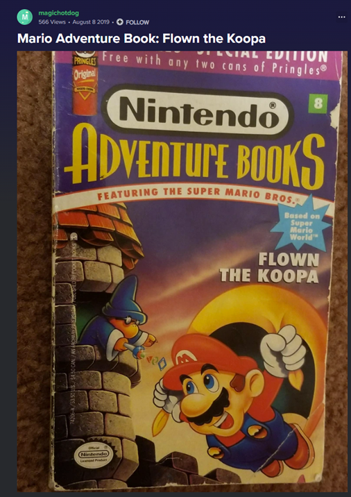
Intro: In this book written by Matt Wayne, Mario and the crew visit Dinosaur Land for the Dino-Flying Derby. Soon however something is amiss, and a Magikoopa is behind it! Use the puzzles to stop this crafty Koopa menace! This is adapted from a handwritten draft from 10/7/19. Since I don’t own this book at the moment, I used images (book has since been properly archived) to create this guide. As usual, look on the Nintendo Adventure Books Key to understand how to use this page.
The guide was created by Amia J. Moore/ C. Mechayoshi. It may not be copied without permission. Credits to that 'magichotdog' guy for scans.
New: use side nav to jump around super quick. It is not meant to represent every page in the book. Click for bigger images.
Stats:
- Chapters: sixty
- Items: Flower, feather, Tickets, Popcorn, Flashlight, Remote
- Endings: eleven
- Max score: Plausible? See ‘Optimal Path’ below.
- Errors: A few things are ambiguous but no blatant issues. (See far bottom).
Chapter 1, Page 1: Mario and co are on the SS Moreltania (kids wouldn't get the pun but.. I did) and heading to Dinosaur Land. Toad has a slip and fall, giving him amnesia. Well, already to a great start! They’re heading to the International Dino-Flying Derby and the Mushroom King’s had the cruise ship on auto-pilot for a while. Keep moving while you can, 'cause if you're familiar with ships with that sort of name, well..
Reward: pair of tickets, ten coins
Split: to page 93
Path: -
Page 4 Chapter 2: Frustrated, the Magikoopa shrinks himself. Luigi dives into an opening for the TV. Do you have the remote? Hopefully so, or Luigi doing that wasn’t very smart was it?
Splits: page 61 (use remote control), page 69 (no remote control)
Path: from page 58
Puzzle solution: Go to sixty-one. You get the remote from finding Bowser in the desert.
Page 5 Chapter 3: In costumes they head back, getting confronted with actual Mega Monty moles. They are cool with the undercover plumbers however, giving them cookies and coins… for now.
Reward: ten coins
Splits: page 98( follow mega moles), page 25 (return to ship)
Path: from page 43
Puzzle solution: Don’t follow the moles beyond this so go to twenty-five.
Page 7 Chapter 4: Luigi purchases an empty bag of popcorn with the sleazy salesman and has to cough up more money before he finally gets his extremely stale popcorn. You lose fifteen coins by the time it’s over, though the book told you you’d lose that much before taking this path so it’s not really a surprise.
Reward: popcorn
Buffet: lose fifteen coins
Split: page 118
Path: from page 55
Page 9 Chapter 5: Mario gets the tickets back, tussles with some creatures, then gets a good view at the top. He spots the tent of the derby but also a fortress among other things. Use the puzzle.
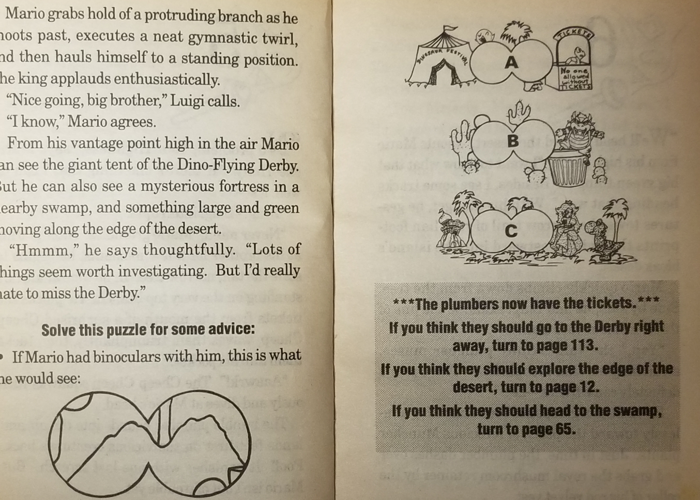
Puzzle: page 1, logic
Splits: Page 113 (go to Derby right away), page 12 (explore edge of desert), page 65 (head to swamp)
Path: from page 105
Puzzle solution: In the pretty creative puzzle you try to match the binocular sized snippet you are given with three possible options. All of the paths are safe for then but I ‘think’ it’s B on twelve since that path will allow you to get an item you’ll need later.
Page 12 Chapter 6: They decide on the Desert but the King takes Toad back to the ship because he’s so out of it he confuses Munchers for cookies. Move on.
Splits: page 51
Path: page 9
Page 15 Chapter 7: Mario uses the flashlight until it dies. The megamoles down there are not inconvenienced by such so they pounce. Check your batteries folks!
Game over
Path: From page 15
Page 16 Chapter 8: Luigi takes the front of the costume and soon they find an actual T. Rex. Use the puzzle.
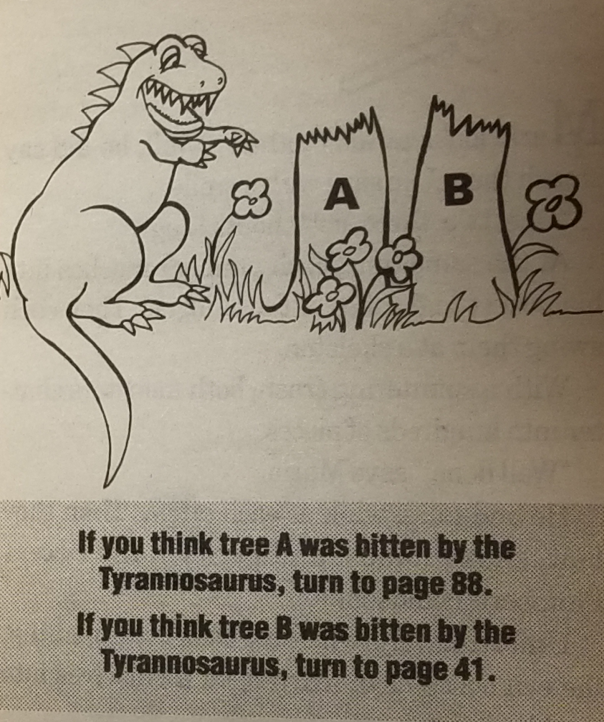
Splits: page 88 (tree A), page 41 (tree B)
Path: from page 67
Puzzle solution: Match the teeth outline with what’s torn from the tree stumps. It’s easier and more obvious if you just focus on the right most part so head to eighty-eight.
Page 18 Chapter 9: The Marios go a-swinging but just make up a mega dry bone. They are knocked out and end up back in the courtyard maze.
Buffet: lose fifteen coins
Splits: page 110
Path: from page 77.
Puzzle solution: a loop-back path
Page 20 Chapter 10: Using popcorn to mark their paths, they find the way out easily.
Splits: page 31
Path: from page 80
Page 22 Chapter 11: The plumbers reach a slippery marshy hillside then find statues of Yoshi and frozen Peach along with a fortress. Yoshi’s cookies made it out okay however which Luigi snatches.
Splits: page 50
Path: from page 100, page 65, page 63
Page 25 Chapter 12: Mario and Luigi get away from the moles before things get too hairy. They head back to the ship to get the dinosaur costume.
Split: page 67
Path: from page 5
Page 26 Chapter 13: The Dino Rhinos crash into the heroes but only the tickets get hurt. Should you chase them down? Use the puzzle. 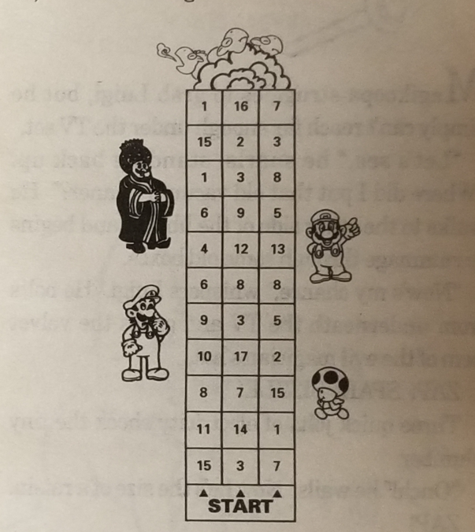
Puzzles: 1, maze, other
Splits: page 105 (go after Dino Rhinos), page 113 (head to Derby)
Path: page 37
Puzzle Solution: Start at the bottom and to the end without touching the same number twice. No diagonals so start on the far left and gun straight up until the one then go to the right to complete it. Send them after the dinos on one-hundred and five.
Page 28 Chapter 14: Grabbing the hat just makes Luigi smaller. Worse yet, Mario who is still out of it is shrunken with him. It all goes black afterwards.
Split: page 92
Path: from page 58
Page 30 Chapter 15: Still lost, the brothers are forced to use a few coins to mark a trail however this fails and they are still stuck.
Buffet: lose seven coins
Splits: page 90
Path: from page 110
Page 31 Chapter 16: The heart of the maze is where they find a hut with a staircase going down down down! Soon they face a thwomp trap. Use the puzzle. 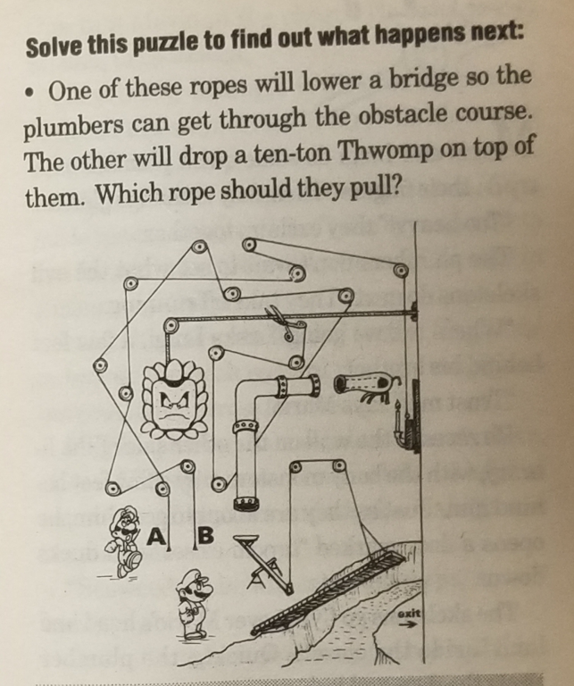
Splits: page 112 (rope A), page 48 (rope B)
Path: from page 20, 76
Puzzle solution: Got to forty-eight after correctly visualizing the long and complex pulley system.. or after just listening to the answer I just gave.
Page 34 Chapter 17: Quick ‘plumber-ome-try’ ensures them that the bones are too heavy so they run. They lock the monsters in a broom closet. Mario is then knocked out while Luigi gets away. His cookies end up broken and now this means serious business!!
Splits: page 58
Path: form page 77
Page 36 Chapter 18: They dodge away but not for long. Do you have a flower flower?
Splits: Page 77 (use Fire Flower), page 92 (no Fire Flower)
Path: from page 85
Puzzle solution: It’s easy to miss but the earliest puzzle gave this to you.
Page 37 Chapter 19: They head to the derby when dino rhinos attack. Use the puzzle. 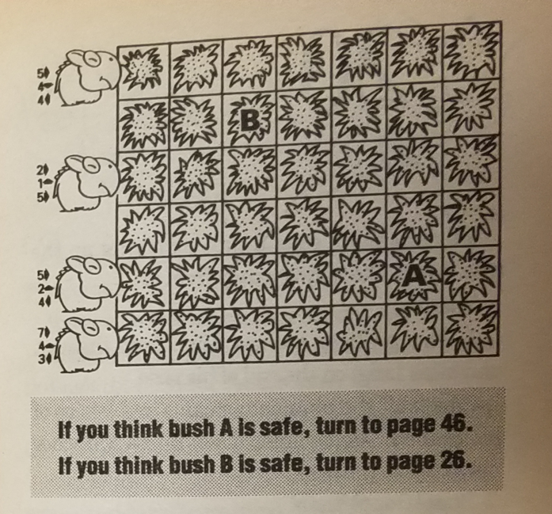
Puzzles: 1, maze
Path: from page 93
Puzzle solution: Use the numbers on the back of the rhinos to know where they’ll stomp. Again it could be explained a little more because their landing position doesn’t really matter much, you just need to make sure that their path won’t cross either A or B. Go to ‘B’ to avoid a hazard.
Page 40 Chapter 20: Luigi climbs the tree to get beaten up by the wildlife. He’s so bad once its over Mario just suggests they head back to the ship for good.
Game over
Path: from page 105
Page 41 Chapter 21: The T. Rex is a fake also in this unfortunate 'twist'. Hammer brothers get the jump on the brothers who are too busy fighting a stuck zipper to counter.
Game over
Path: from page 16
Page 43 Chapter 22: They return to the cruise ship to find the King forgetting things as well. They find costumes and Luigi mentions not dressing up as a ballerina ever again. That could be a joke or a reference to Book#5 Pipe Down! Use the puzzle.
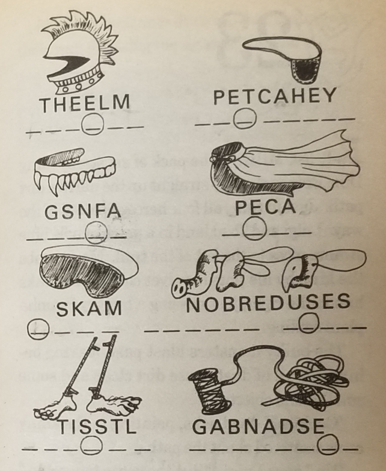
Split: page 6 (disguise as giant moles), page 67 (disguise as dinosaur)
Path: from page 103
Puzzle solution: A pretty easy unscramble game, except for the fake nose part, where you have ten letters but eleven spaces. You’ll have ‘helmet’, ‘eyepatch’, ‘fangs’, ‘cape’, ‘mask’, ‘(???) noses’, ‘stilts’, and ‘bandages’ giving the message of ‘mega mole’. Go to page five to disguise as a mole. This leads to some points ultimately and you’ll eventually return for the other costume which is why the optimal path skips this diversion. For the highest score however (see concluding notes) go for it?
Page 46 Chapter 23: They all avoid the Dino Rhinos and find some coins after.
Reward: fifteen coins
Splits: page 113
Path: from page 37
Puzzle: The money for the popcorn is here if you want it. (See optimal path)
Page 48 Chapter 24: They avoid the Thwomps then Mario tries to use Luigi’s cookies as a decoy. Mario’s pocket ends up ripping and his coins become the thwomp bait. They do find more however, then press onward.
Reward: Ten coins
Splits: page 89
Path: form page 31
Page 50 Chapter 25: They reach the fortress but the only way in it seems is with the feather.
Splits: page 115 (use Magic Feather), page 103 (no Magic Feather)
Path: from page 22
Puzzle solution: You should have the feather from page ninety-three but if you don’t have it you can still get in, you just won’t be doing it right away.
Page 51 Chapter 26: They reach a sign pointing to Valley of Koopas and Bowser himself just sitting around. Bowser sends three Mecha-Koopas on them. Actually, its four because Bowser’s bad at math. Use the puzzle.
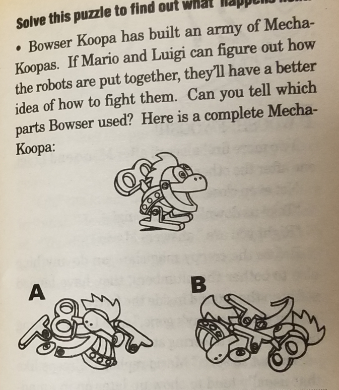
Splits: page 100 (group A), page 83 (group B)
Path: from page 12, page 63
Puzzle solution: Which bundle of parts creates a Mecha Koopa? Apparently, the smaller ‘A’ pile on page one-hundred.
Page 54 Chapter 27: The fireballs miss and they land in the courtyard.
Splits: page 80
Path: from page 115
Page 55 Chapter 28: The derby is a disappointment and unkempt with broken-down rides. Inside the sad tent the audience is Koopa Troop and the show is even worse with sickly dinos unfit to perform. Luigi wants popcorn depending on your money situation.
Splits: page 7 (fifteen or more coins), page 118 (fewer than fifteen coins)
Path: from page 113
Puzzle solution: The popcorn costs fifteen coins you may or may not have. It’s not necessary and will reduce your score overall but it will make a later part much easier. For the sake of the optimal path (see far bottom of guide) we skip it however. If you pass on the snack just move on to one-hundred eight.
Page 58 Chapter 29: Luigi is shrunk down and forced the evade the magikoopa who’s a lot more scary when comparatively giant. He spots his hat but ‘when your small inches seem like miles’ according to the book. I, uh, agree? Use the puzzle.
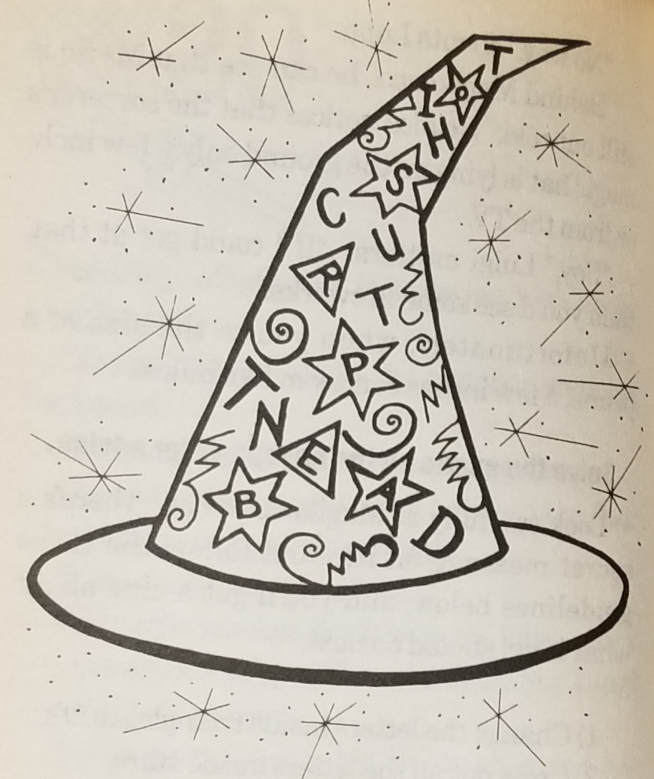
Splits: page 24 (grab the hat), page 4 (stay put)
Path: from page 34
Puzzle solution: Follow the very easy instructions with the hat illustration. It will say ‘DON’T TOUCH IT’. Go to page four.
Page 61 Chapter 30: Mario wakes up just in time with the remote. He switches to ‘bowling for billions’ as Luigi escapes and the Magikoopa gets slammed. Money flows generously out of the TV. Often I am irked when these books dump a lot of coins/points on the reader simply for winning, but in this case at least they set up the obvious joke. It gets a pass this time.
Reward: three-hundred coins
Splits: page 74
Path: from page 4
Page 63 Chapter 31: They derby is packed up but there’s too many footprints for it to make sense. Use the puzzle on the tracks.
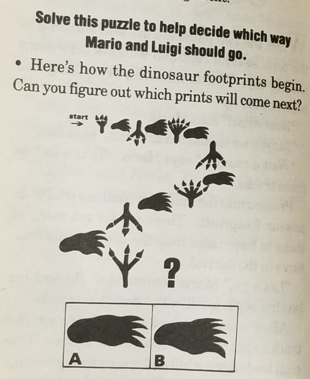
Splits: page 22 (print A), page 51 (print B)
Path: page 118
Puzzle solution: Focus on the horizontal prints. The twenty-two path sends you to discover Yoshi, Peach and the fortress but fifty-one leads to Bowser and an item you’ll need.
Page 65 Chapter 32: They head to the swamp when the King bails on them with Toad, leaving the Mario bros. Luigi is glad he doesn’t have to share cookies anymore. They find some tracks.
Splits: Page 22
Path: from page 9
Page 67 Chapter 33: Mario chooses a Brachiosaurus costume then they argue over who will be in the front of the back, culminating into a three minute staring contest. Use the puzzle.
Puzzles: 1, decipher
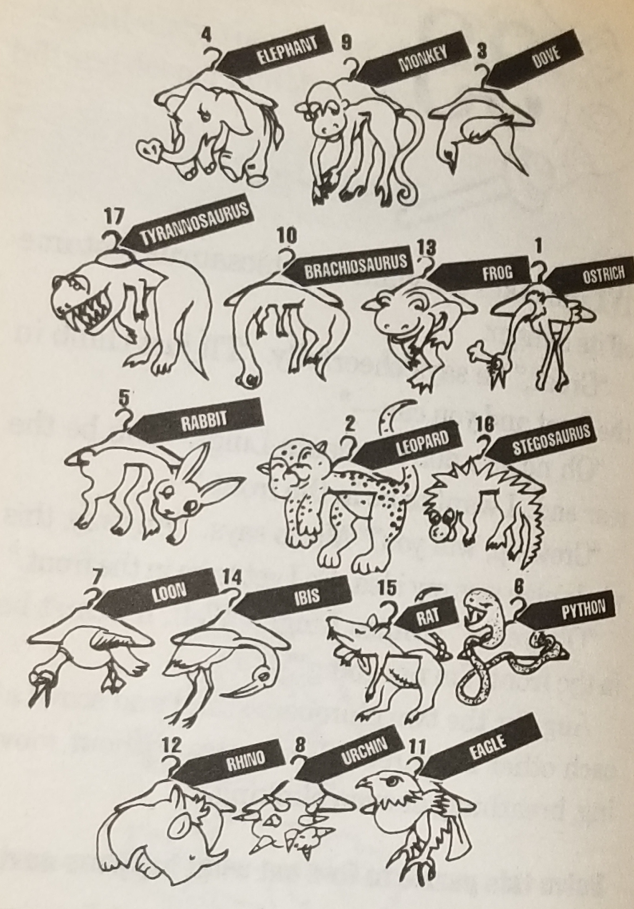
Path: from page 43, page 25
Puzzle solution: Use the first letter of the costume labels in order as numbered. Very easy. It will say, ‘older plumber first’ so head to one-hundred eight. Having Luigi lead won’t kill you and it might even be funny, but it’ll lead to trouble later.
Page 69 Chapter 34: The Magikoopa starts fiddling with the controls, very bad for Luigi stuck inside of the TV.
Game over
Path: from page 4
Page 70 Chapter 35: The Mario bros lost theirs and receive no mercy. During the guards ranting they miss the sounds of things going wrong on the inside of the fair area and everyone is doomed. Fun fact, those unfortunate events don’t actually happen should you successfully enter the derby..
Game over
Path: from page 70
Page 72 Chapter 36: The Mario bros get shrunk down into a TV game show for the next seven years!
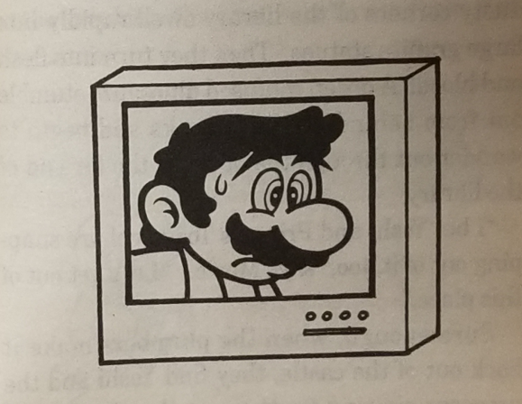
Path: from page 85
Page 74 Chapter 37: With Magikoopa gone, things return to normal instantly. Everyone returns to the ship where Toad has baked cookies, no one is stone, and everyone is sane. Mostly.
Game Over (Win)
Path: from page 61
Page 76 Chapter 38: They find the center of the maze at last.
Splits: page 31
Path: from page 90
Page 77 Chapter 39: Mario spits fire (like a fire bro!) and they fight it out. Now there are dry bones to contend with. 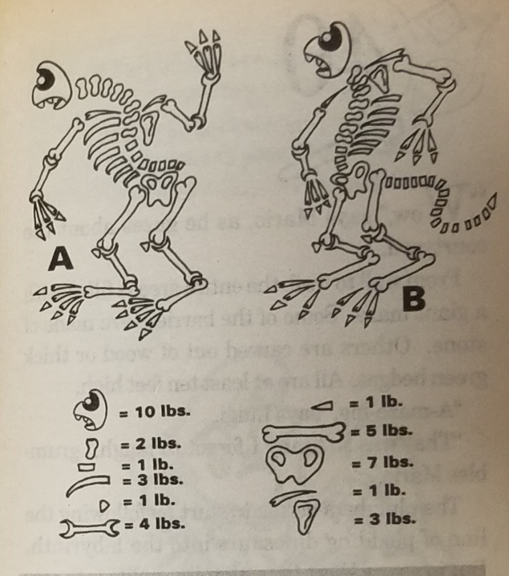
Splits: page 18 (skeleton A), page 34 (skeleton B)
Path: from page 36
Puzzle solution: Which set of bones is heavier in this puzzle that will really get you thinking.. and using calculators I guess. It’s needlessly too many bones in each pile to count really so it’s page thirty-four or option A. Page eighteen won’t kill you but it will eject you far back into the maze and that would suck.
Page 80 Chapter 40: In the maze and soon lost. Maybe an item could help?
Splits: page 20 (use popcorn), page 110 (no popcorn)
Path: from page 54, page 108
Puzzle solution: Use the popcorn if you have it for a shortcut.
Page 82 Chapter 41: What? An orphaned entry? In this unusual variation of a ‘you can’t get that score’ page, instead it says that ‘you shouldn’t be reading this page!’ It says there’s no way to lead here and it’s right. You must instead stumble on this page or read a page number wrong. Quite obviously they just had an extra page to fill and I found that strange.
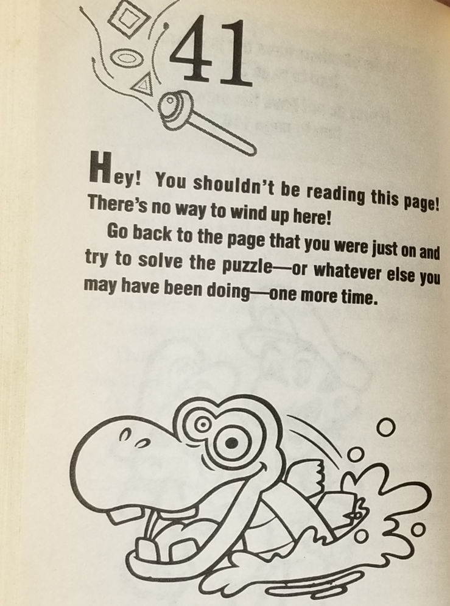
Path: -
Page 83 Chapter 42: Luigi underestimates a mecha who knocks him out then Mario, then in a twist Bowser too! With all three unconscious the Mecha-Koopas roam out of the valley with bigger plans of world domination!
Game over
Path: from page 51
Page 85 Chapter 43: Mario pretends to want to check out a library book which are all just fuel for the Magikoopa’s electric generation and he’s not really a bookworm or anything. The generator is all for his demented TV shows involving shrinking down victims literally in the television. Anyone trying to stop him he turns into stone. Use the puzzle.
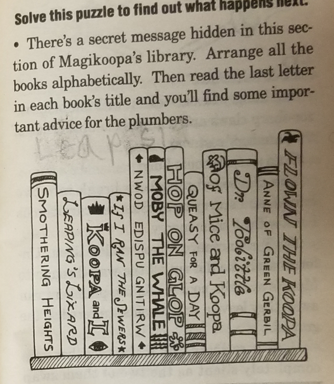
Splits: page 72 (stay where they are), page 36 (dive out the way)
Path: from page 96
Puzzle solution: Arrange the books alphabetically then look at the last letters. It says ‘leap sideways’. Shout outs to Leaping Lizards (Book #2) and a bunch of other neat puns.
Page 88 Chapter 44: The rex tears a hole in the Mario bros costume and they run, money lost and broke. They switch the halves of the suit and continue on.
Buffet: lose all coins
Splits: page 108
Path: from page 16
Puzzle solution: Not the worst the book could have rung you through, since at least you still have your items. Just forget about the high score!
Page 89 Chapter 45: It gets dark and darker leading to the way down. Mario wonders if they have a flashlight.
Splits: page 15 (use flashlight), page 96 (no flashlight)
Path: from page 48
Puzzle solution: Make sure you don’t have the flashlight from the start of the story. Go to ninety-six.
Page 90 Chapter 46: They continue on exasperatedly. Use the puzzle.
Puzzle: 1, decipher, logic
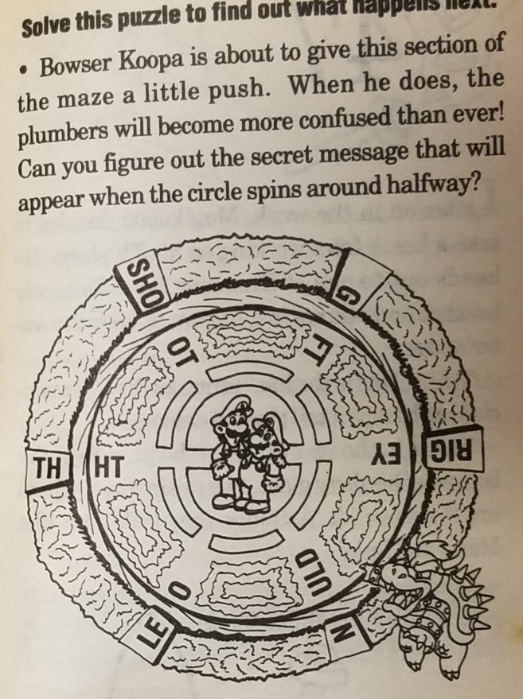
Path: from page 110, page 30
Puzzle solution: Figure out the message after Bowser (coming out of nowhere) spins the circle halfway. It’s kind of neat and not nearly as tricky as it might sound. ‘They should go right not left’ is the message. You can also simply take note of the fact that you might have been to some of the page options previously, indicating they are loop backs and not progress. Go to seventy-six.
Page 92 Chapter 47: We skip to a week later. The Magikoopa is enjoying life and sipping an icy drink... What's that also in there? The Mario bros?
Game over
Path: from page 36, page 28
Page 93 Chapter 48: The boat hits something! Surprise! But it’s just the shore and their destination of Dinosaur Land at that, so the crash doesn't count. By the way, ship fine and seaworthy too as some alternate paths will reveal. The Princess is in such a rush she grabs Yoshi and books it. Solve the puzzle and very carefully!
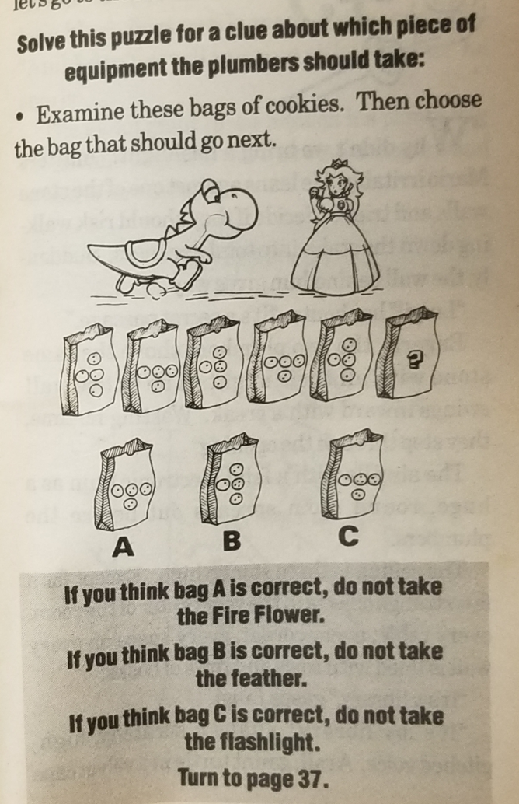
Reward: Flower, feather, or flashlight
Splits: page 37
Path: from page 1
Puzzle solution: Look at the bag of cookies and their pattern. I didn’t get it at first because I was focused on the dots on the cookies rather than the obvious orientation pattern. The C labeled bag is the answer. First note that whatever you pick means you do NOT get that item, meaning that you gain everything else. Do not miss that detail or you’ll lose out on an item you need. To reiterate, you want to choose the ‘C’ option meaning you won’t obtain the flashlight.
Page 96 Chapter 49: They find a secret passage on accident and enter it, leading to a library belonging to a Magikoopa that confronts them. This is a distant cousin of Bowser it seems though Bowser himself doesn’t acknowledge this nor have any connection otherwise. Note the edited but cool illustration.. 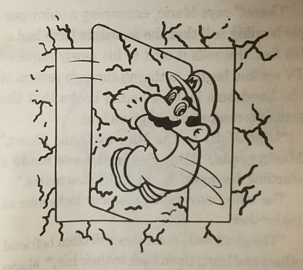
Path: from page 89
Page 98 Chapter 50: The Marios waste some hours being pampered in the Mega Mole, at least until he's handed a book and reads about his future demise!
Game over
Path: from page 5
Page 100 Chapter 51: Luigi trashes a mecha then notes the remote control Bowser was poorly hiding. He decks Bowsers who flees, dropping it. He cuts the rest off then tunes the into a different channel where the mechas recreate a sports game, complete with decapitation among each other. I didn't make that up. Oh, they find money too.
Reward: ten coins, remote control
Splits: Page 22
Path: from page 51
Page 103 Chapter 52: They walk around but find no way in. Luigi almost panics but has cookies to calm him down. (Thank goodness) They spot dinosaurs being herd into a tunnel by Koopas. They decide to return to the ship for disguises.
Split: page 43
Path: from page 50, page 120
Page 105 Chapter 53: They chase the rhinos out into the desert then spot the tickets floating in the air before resting in a tree. A cheep cheep in the tree (yes) brings them to its nest and there’s munchers at the base of the tree too. Very rough news.
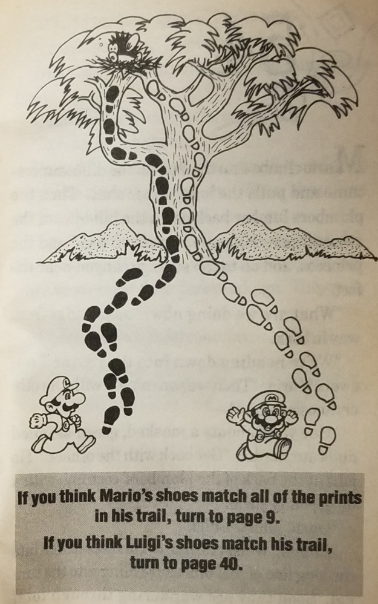
Splits: Page 9 (Mario’s shoes match), page 40 (Luigi’s shoes match)
Path: page 26
Puzzle solution: Use the plumber whose boots match the foot prints. It’s not explained well but Mario’s is correct since (I guess) Luigi’s path has at least one backwards print. Go to nine.
Page 108 Chapter 54: They take the dino costume towards the swamp, not getting far before they’re herded with the other real dinosaurs. They bail and find themselves in the fortress courtyard.
Splits: page 80
Path: from page 67, page 88
Page 110 Chapter 55: They continue to be lost in the maze. Use the puzzle.
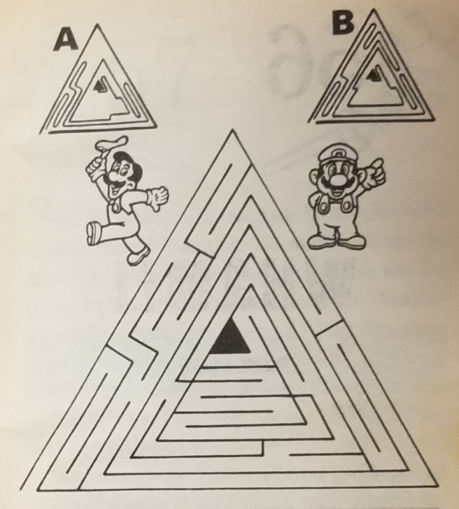
Splits: page 90 (map A), page 30 (map B)
Path: from page 80, page 18
Puzzle solution: A maze that’s oddly presented. Solve it normally to see if the A or B matches the path. It should be A on page ninety or you’ll hit a rather silly hazard.
Page 112 Chapter 56: Wham! No really, that’s what the page says!
Game over
Path: from page 31
Page 113 Chapter 57: They reach the Derby in the valley where a pushy and rude guard wants the tickets. Do you have the tickets?
Splits: Page 55 (have tickets), page 70 (no tickets)
Path: from page 26, page 46, page 9
Puzzle solution: Please have the tickets.
Page 115 Chapter 58: Mario and Luigi soar over the fortress walls before a fireball is shot their way from a Magikoopa below. Use the puzzle.
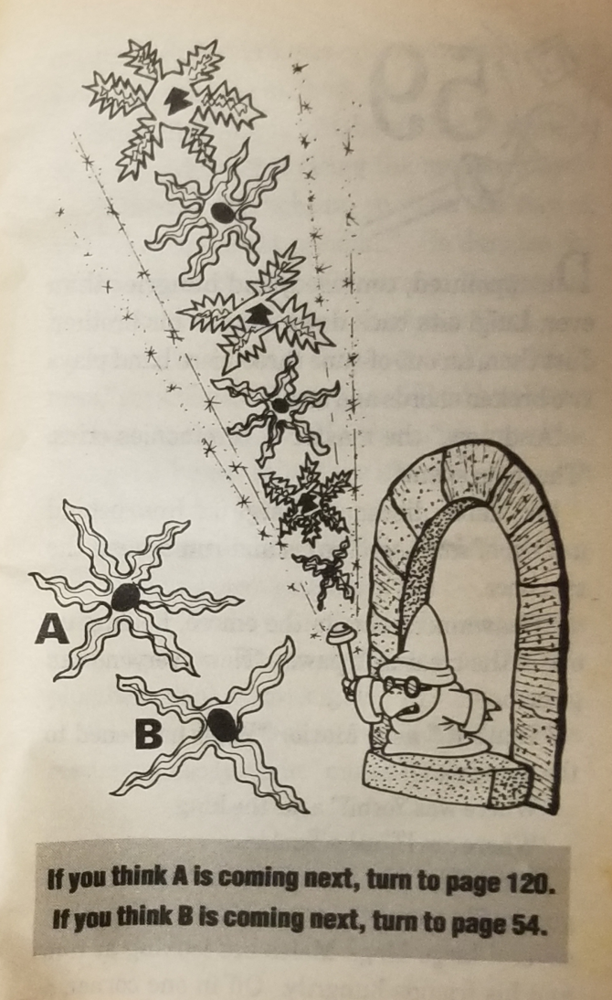
Splits: page 120 (A), page 54 (B)
Path: page 50
Puzzle solution: Observe a pattern of fireballs. Pay attention to the number of points to easily see what’s up. Go to fifty-four to not lose your item. Also see optimal path.
Page 118 Chapter 59: Luigi return to the derby in time for the horrible conclusion of the show with no Yoshi involved anywhere. Next Mario notices that the audience is starting to look at them like they’re a snack (in a bad way, not as in they're handsom- forget it..) They send the King and Toad out while they deal with the funny business.
Split: page 63
Path: from page 7, page 55
Page 120 Chapter 60: The plumbers get hit and drop like rocks outside the fortress.
Buffet: lose feather
Split: Page 103
Path: from page 115
Summary and conclusions:
As this was yet another in the series I never got to grow up with as a kid, my feelings could have went either way. I like the quirky Magikoopa cousin of Bowser. The Dinosaur Land settings are used well and memorable. There’s only a few major locations but they work. Writing and character interactions were some of the best in the series with lots of funny moments and banter, even amusing endings. Structure wise it gets linear in the very end, but I like the many paths you can take to get there. As long as you obtain the correct items you’ll make it. I just realized that they never explain who messed up the Dinosaur Derby. I mean it’s implied to be Bowser or the Magikoopa but there’s it's never cleared up...
Let’s touch on the items and puzzles. The early cookie bag puzzle somewhat uniquely (but in a bad way) has a quirk where what you chose means you do NOT get that item. This book has an ‘item of doom’, the flashlight which will screw you later in the book. They also under-emphasize what you need, so you couldn't get stuck while doing it all right. Overall the item checks are a little harsh, not the worse offenders in the family, but eager to penalize you too on hazard pages. While some puzzles are okay and well suited for the theme, others feel needlessly over complicated, tempting you to guess on choices. Points wise, the coins are a little scarce in the book. I liked the detail however, of how you can 'sacrifice' a bit of your score (via the popcorn of page seven)to make a later part easier, or tough it out to keep the higher score. The only other quirk I must point out is that I’m not sure how to max out the score. See the optimal path below. It's not a typical plot, and the structuring clearly had some thought and planning behind it, plus I like the Mario Bros action here. 4/5.
Optimal Path:
START: 1 (tickets, ten coins)- 93 (flower, feather)- 37- 46 (fifteen coins)- 113- 55- 118- 63- 51- 100 (ten coins, remote)- 22- 50- 115- 54- 80- 110- 90- 76- 31- 48 (ten coins)- 96- 85- 36- 77 (used flower)- 34- 58- 4 (use remote)- 61- 74 (three-hundred coins) END
This gives you 3450 points, “King of the Sewers” and the second highest. We skip the Monty Mole layer, because it goes really out of the way. Even with those points however, you won’t be a "Plumbersaurus Rex". This isn't exactly a loopy book and they rarely make the threshold so tight, so I'm leaning on score calculation error. By the way, no one else on the internet as far as I've seen got higher than 3500.
Item Locations:
- Flower: page 93
- Feather: page 93
- Tickets: page 1
- Popcorn: page 7
- Flashlight: Page 93
- Remote: Page 100
Puzzle analysis: Seventeen puzzles, most of them ‘logic’ type. There are two ‘mazes’, three ‘decipher’ puzzles, one maze/other, one word search, one decipher/logic, and one matching/logic. So logic wins? This isn’t the easiest of the books puzzle wise, but the difficultly is mostly having a lot of busy-work to do rather than needing to think hard.
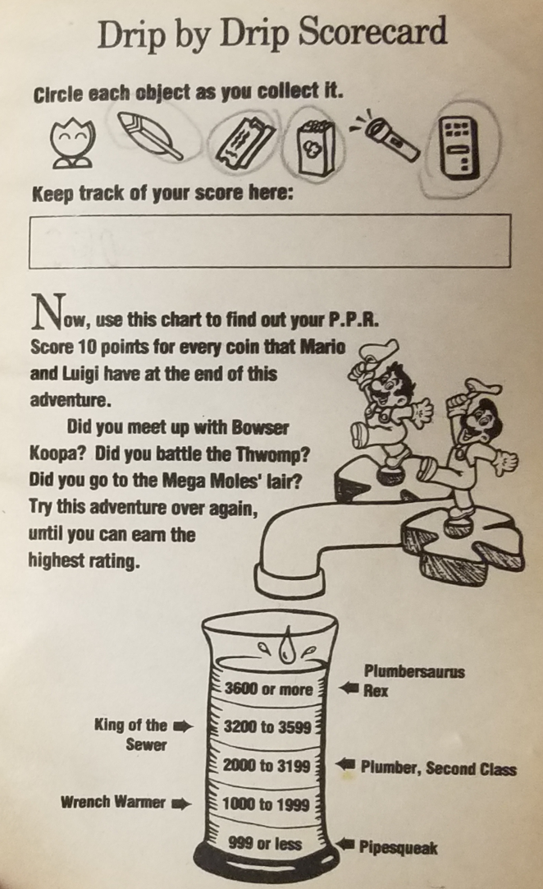
Book goals:
-They want you to meet up with Bowser: Easy. You must to get the remote.
-Battle the thwomp: Is on the necessary path as well, so pointless to mention besides reinforcing that you’re on the right track.
-The Mega Mole layer: This can be easily skipped, but in their defense it does award coins. (Or might kill you.) It just felt so out of the way my optimal path skips it, but I totally understand the hint.
Last edited: 2/20/20, 11/14/20, 11/18/21
Redone: 9/30/26